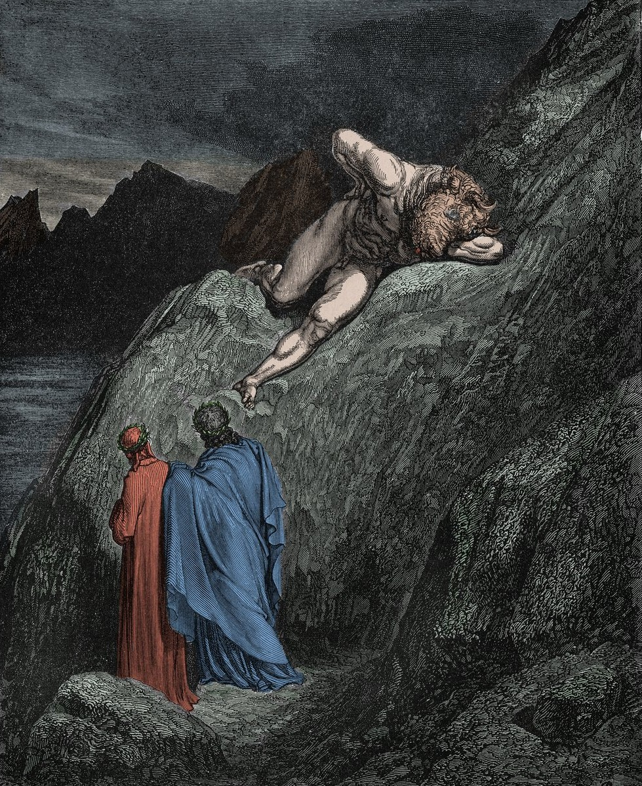

Dante e Virgilio sostano presso la tomba di papa Anastasio per abituarsi al terribile fetore del basso Inferno. Virgilio approfitta della pausa per spiegare la struttura morale dei cerchi successivi, basata sull'etica aristotelica. Illustra la distinzione tra i peccati di malizia, puniti nei cerchi inferiori, e quelli di incontinenza, già incontrati. La malizia si divide in frode, propria dell'uomo, e violenza. Il maestro chiarisce inoltre perché l'usura offenda Dio, in quanto spregio della natura e dell'arte umana.
I poeti scendono nel settimo cerchio, sorvegliato dal mostruoso Minotauro. Qui si trova il primo girone, dove i violenti contro il prossimo (tiranni, predoni e omicidi) sono immersi nel sangue bollente del fiume Flegetonte. Il grado di immersione dipende dalla gravità delle colpe. Il centauro Nesso, incaricato da Chirone, scorta Dante e Virgilio guatando il fiume e indicando famosi peccatori come Alessandro Magno e Attila. Infine, Nesso aiuta Dante a guatare il fiume trasportandolo in groppa fino all'altra sponda.
